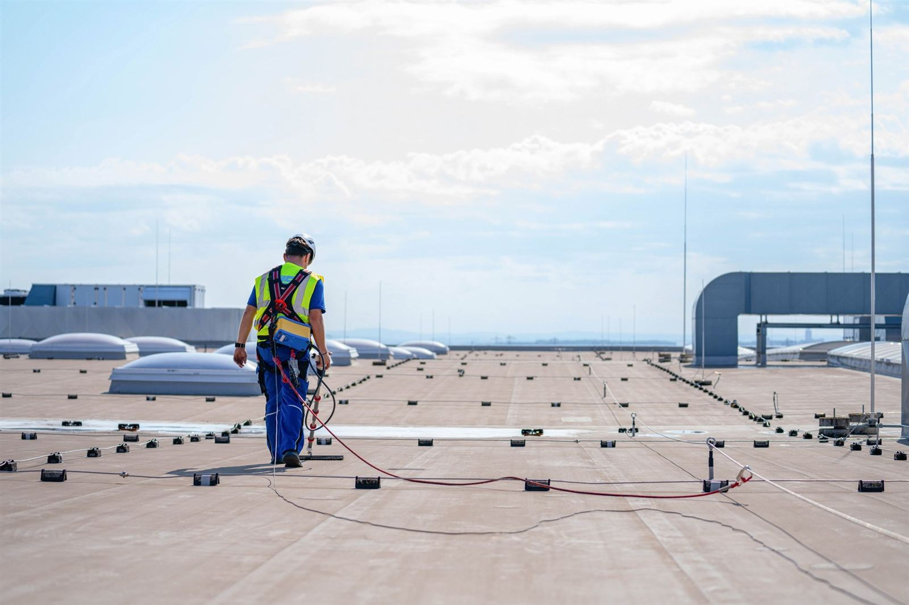
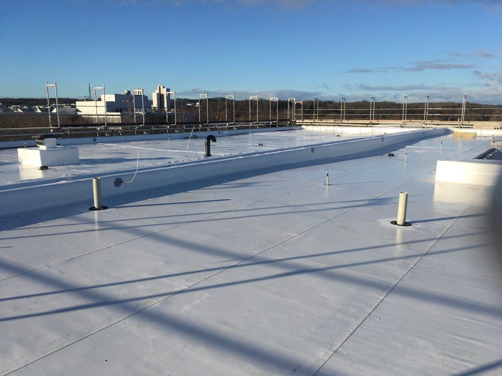
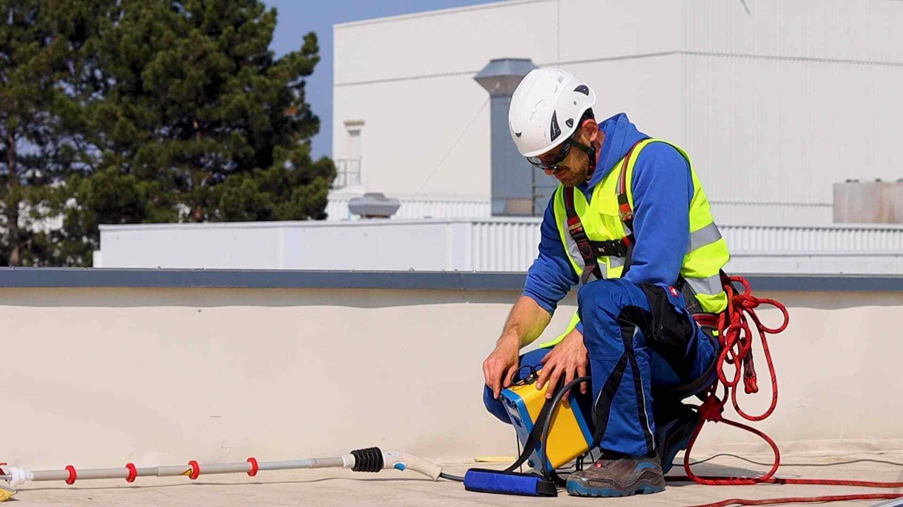
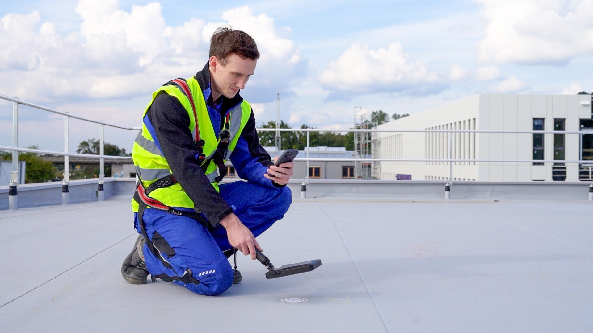
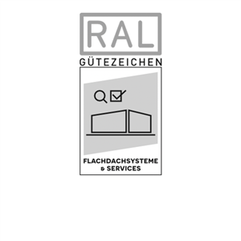
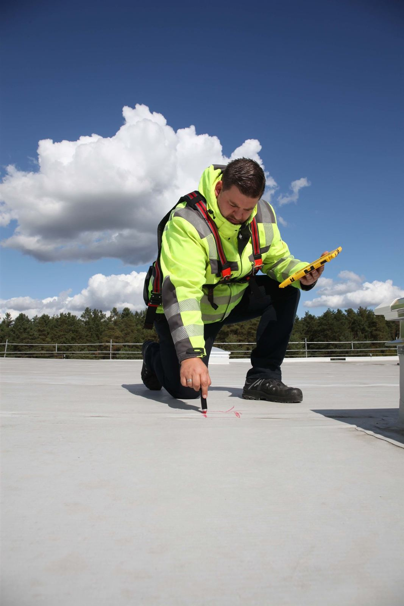
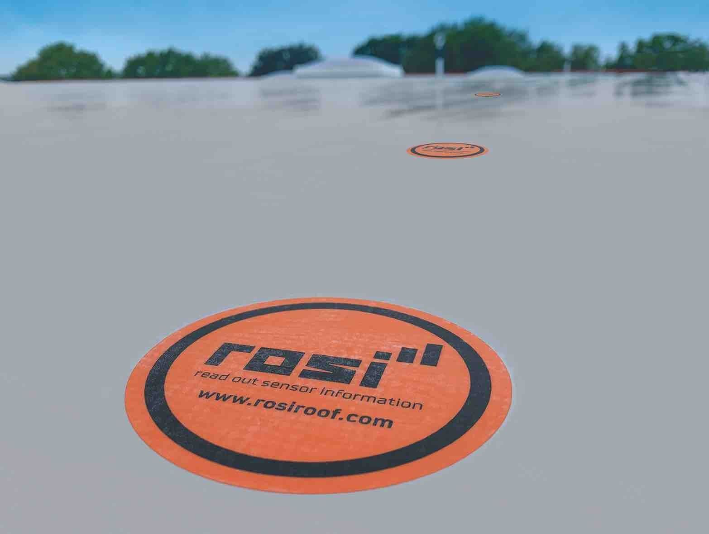
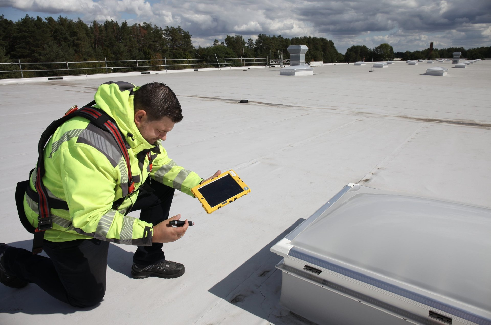

Detección de fugas, sensores de humedad y mantenimiento de cubiertas planas en toda España. Independientes, certificados y neutrales.

Una cubierta plana con fugas genera costes elevados en tiempo y recursos. Con TRM estás en buenas manos: ya sea en detección de fugas, sensores de humedad o servicios de mantenimiento individuales.
Actuamos siempre de forma independiente y neutral, sin vínculos con fabricantes ni instaladores. Cada intervención incluye un protocolo completo con reportaje fotográfico y diagnóstico detallado.
Sobre nosotros
Cubierta inspeccionada
Fugas detectadas con precisión
Clientes satisfechos

Con el innovador método HV-SLD, las fugas y zonas potencialmente dañadas se localizan con precisión milimétrica de forma completamente no destructiva.

Incorporamos sensores de alta sensibilidad que monitorizan la superficie del tejado en tiempo real, emitiendo alertas tempranas antes de que se produzcan filtraciones mayores.
Diseñamos y ejecutamos planes de mantenimiento adaptados a cada nave. Inspecciones técnicas periódicas, revisión de sellados, limpieza de canalizaciones y evaluación estructural.
Más informaciónProtocolo verificable con reportaje fotográfico, diagnóstico detallado, análisis de riesgos, identificación de puntos críticos y recomendaciones técnicas específicas.
Solicitar presupuestoCertificación SLD y sello de calidad RAL Gütezeichen
Actuamos objetivamente, sin vínculos con fabricantes ni instaladores
Amplia experiencia en proyectos de cubierta en toda España
Tecnología HV-SLD y sensores de última generación
Excelente relación calidad-precio en cada proyecto
Precisión, metodología y transparencia en cada intervención técnica sobre cubiertas planas.
Excelente colaboración y resultados impecables en la detección de fugas. TRM localiza con precisión lo que otros no ven.

Con el método HV-SLD localizamos el punto exacto de entrada de agua sin necesidad de desmontajes, entregando un informe técnico completo con fotografías y diagnóstico.
Más información
Sensores de alta sensibilidad instalados bajo la impermeabilización que detectan cualquier incremento de humedad y envían alertas antes de que se produzcan daños.
Más información
Planes de mantenimiento periódicos adaptados a cada nave industrial. Inspecciones técnicas, revisión de sellados, limpieza de canalizaciones y evaluación estructural.
Más información
Nuestro equipo técnico te responde en menos de 24 horas.